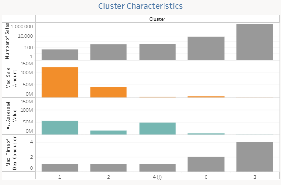
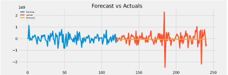

Connecticut Real Estate Sales CRISP-DM Data Analysis
OVERVIEW
The Connecticut Real Estate Market is very dynamic. With a population of approximately 3.5 million people, around 400 thousand one-family homes were sold from 1999 to 2022. The analysis aims to identify the most exciting patterns for real estate investments.
PROCESSING
The analysis was conducted using the Deep Mining CRISP-DM methodology. After performing the exploratory data analysis in Python, the Linear Regression method, Cluster analysis, and ARIMA Data Modeling were applied to the dataset. The best opportunities for Real Estate Investment, considering maximum profit and liquidity parameters, were identified. Additional tools such as Tableau for data visualization and Excel for computational programming were utilized in this research.
INSIGHTS
The data is divided into 5 clusters. Each cluster contains real estate with similar characteristics from an investment perspective.
The ARIMA model created allows for future data forecasting. It is likely normally distributed, and has a fairly constant variance, making it a good fit for the data.
RECOMMRNDATIONS
- Targeted Investment Strategy: Focus on clusters 3, 0, and 2 for high-value investments and quick deal closures (Source: Real estate Cluster Analysis).
- Seasonal Strategy: Align investment and sales with peak summer and year-end real estate activity (Source: Real Estate Market Seasonal Trends).
- Diversified Portfolio: Diversify Connecticut Real Estate holdings to mitigate appraisal risks (Source: Real Estate Portfolio Analysis).
- Investment Opportunity: Consider Single-Family Houses with an average sale price of $250,000 for liquidity and lower risks (Source: Real Estate Market Analysis).
- Continual Monitoring: Implement ongoing real estate data monitoring to identify trends and anomalies (Source: Real Estate Portfolio Data Analysis).
- Conduct Specialized Research: Investigate discrepancies in assessed and sales values for deeper insights (Source: Real Estate Appraisal Research).
- Anomaly Investigation: Investigate anomalous cluster 5 properties for valuable investment insights (Source: Real Estate Anomaly Analysis).
- Reliance on Forecasts: Utilize the ARIMA model for reliable real estate market forecasting (Source: ARIMA forecasting model).